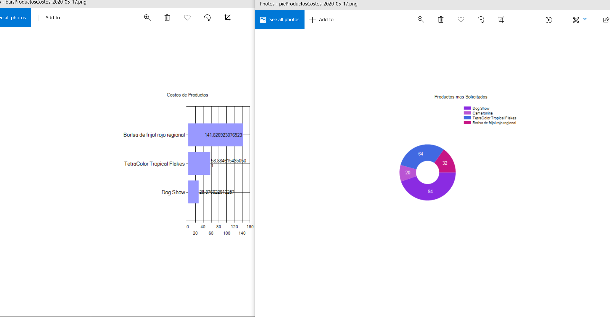
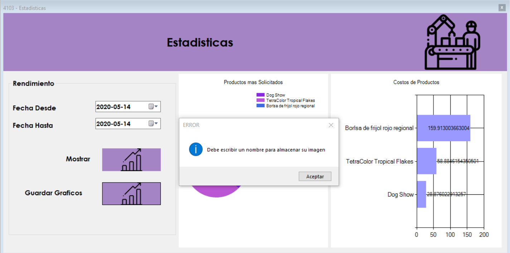

Pantalla de Inicio
Se muestra un formulario con un ingreso de fechas que corresponde al rango de datos que se obtendra para cargar los graficos, 2 botones, el primero para generar los graficos y el segundo para guardar los graficos.
Seleccion de Fechas
Seleccionamos el rango de fechas, es decir, desde que fecha en el tiempo hasta la fecha actual o meses anteriores. Es importante siempre seleccionar primero la fecha "desde" ya que la fecha "hasta" no permitira buscar menos de la fecha establecida en "desde".
Mostrar Graficos
Al dar clic en "Mostrar Graficos", nos desplegará un grafico de pie, el cual contiene la infromacion de los productos mas solicitados o producidos en estas fechas y un grafico de barras que nos muestra informacion sobre los costos de produccion basado en las ordenes producidas en el rango de fechas, por lo cual podra consultar el costo de un producto en el mes o en una semana.
Guardar Graficos
Al dar clic en el boton "Guardar Grafico" desplegara una ventana como la siguiente.
Debemos ingresar el nombre con el que deseamos guardar nuestras imagenes, las imagenes se almacenaran en la ruta...... bajo el nombre que usted colocó y la fecha en que se guardaron los graficos, en formato png.
Errores
Se le pueden presentar 2 errores, sin datos en el rango de fechas asignado o que no haya introducido un nombre para almacenar sus graficos. su solucion es obvia.
